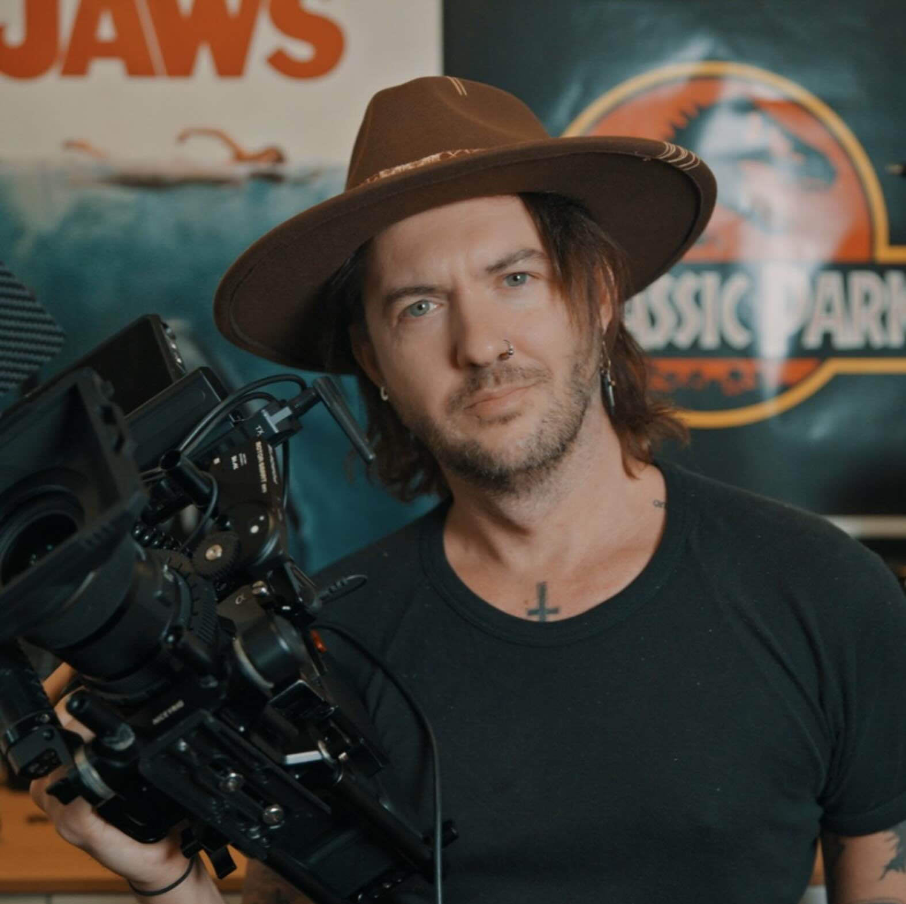

My Work

My filmmaking journey began in 2011, capturing the raw energy of live music and band performances. These early experiences fueled my passion for storytelling and my talent for uncovering the emotion and humanity in real-life moments.
In 2013, I moved to Berlin to create Busking for Berlin, my first feature documentary. The film follows “Neigh Kid Horse,” a young street performer navigating Berlin’s vibrant busking scene, as he rises to local fame. Praised for its unfiltered portrayal of life on the streets, the documentary highlighted the passion and perseverance it takes to turn art into a livelihood.
Nearly a decade later, I returned to Berlin with Busk Life (2024), a sequel that revisits “Neigh Kid Horse” and introduces a new generation of street performers. The film delves deeper into the challenges, creativity, and resilience that sustain Berlin’s iconic busking culture.
In 2021, I took a detour from street performances to chronicle my own adventure in A Sail Untold. This YouTube-exclusive film documents my daring escape from Australia during the COVID-19 lockdowns by sea, facing unexpected trials on the open ocean. Equal parts thrilling and personal, the film showcased my ability to turn even my own struggles into compelling stories.
Now, in 2024, I embark on my most ambitious project yet,a year-long exploration of the origins of martial arts around the world. Immersing myself in the culture and training of various disciplines, my new documentary (title TBD) will offer a global perspective on the history and spirit of martial arts.
With a love for travel that has taken me to over 40 countries and more than 300 cities, and having lived in 4 different countries, my work consistently captures the grit, creativity, and resilience of the human spirit. Whether documenting street performers, daring adventures, or cultural traditions, my films invite viewers to step into worlds they may never have encountered. I’m not just a filmmaker,I'm a storyteller who lives the stories I tell.
My Documentaries
Busking for Berlin
Busk Life
A Sail Untold
Interested in Collaborating?
If you're interested in collaborating on a project, feel free to reach out to me!
Contact Me